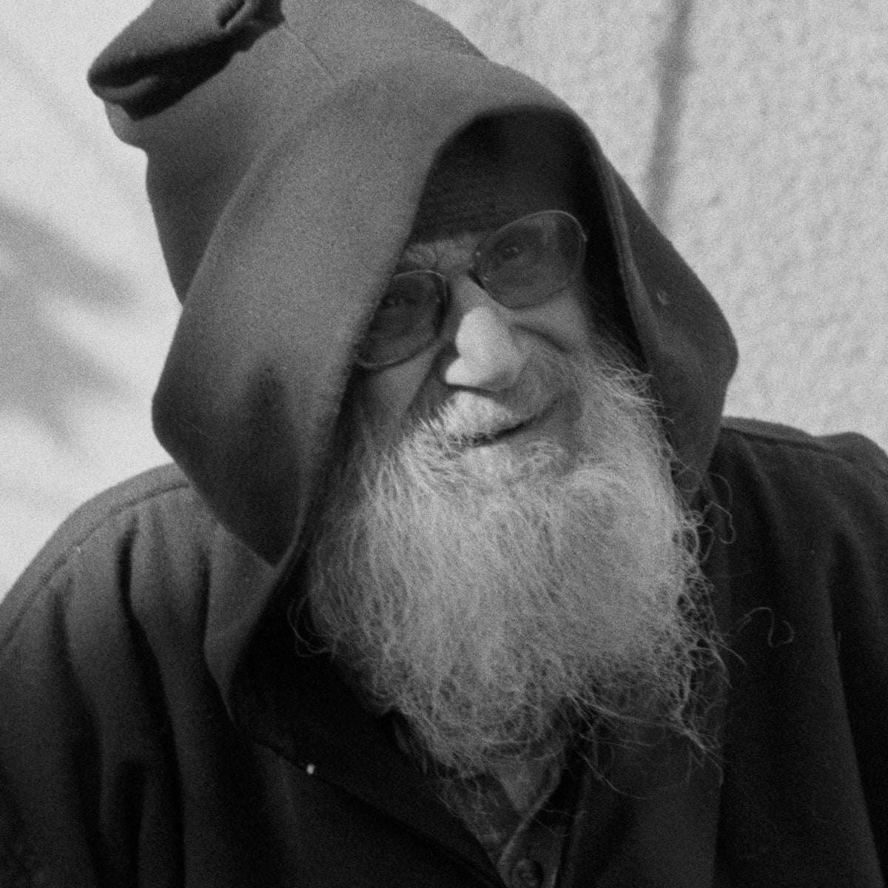

Business Class, Scarcity and Empathy
miscellaneous thinking
I flew business class for the first time yesterday. Usually, travel is a constant reminder that I am nothing beyond my role as a consumer, that I have no value beyond the few pennies that have yet to be squeezed out of me, that I am not deserving of respect or even consideration, that my presence and existence is a nuisance. I am herded like an animal, afforded as little as the airline can get away with.

Instead, travel is now a pleasant experience where there is no scarcity, I am treated as a human being, with genuine consideration for my needs, wants and well being.It is somehow that they've gotten enough from me - I've paid the dues, in fact overpaid the dues, so much so that I've created a chasm between what I have paid and the airline's expectation of what is reasonable to ask of me. This chasm protects me, it allows the airline to forget I am a consumer, to forget the buyer-seller aspect of our relationship - and just try to treat me decently, to recognize my humanity.